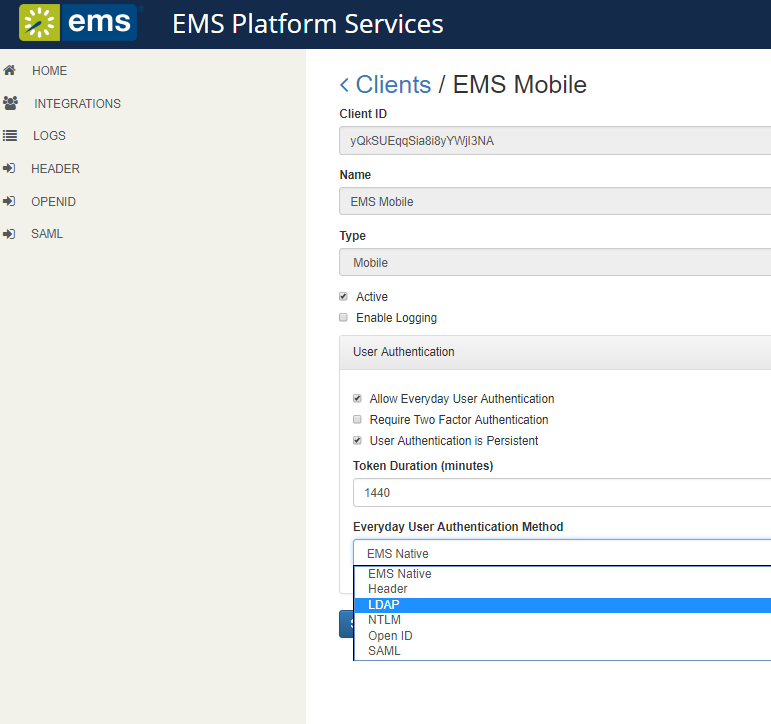
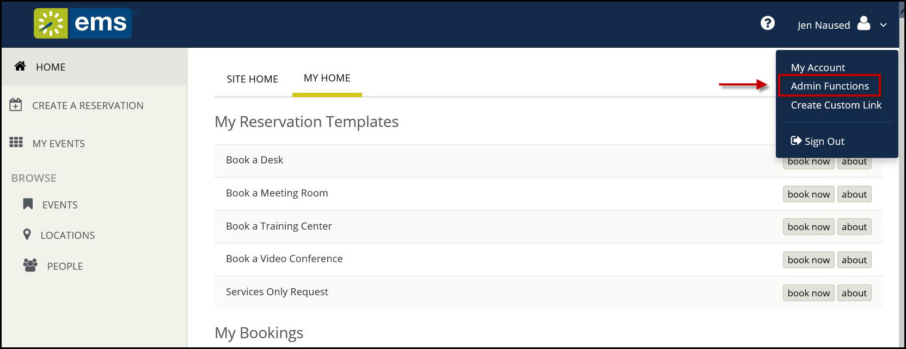
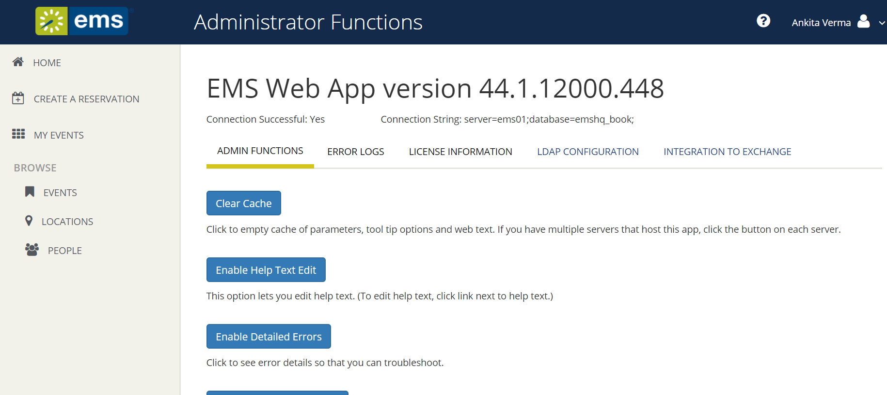
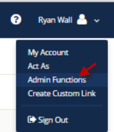
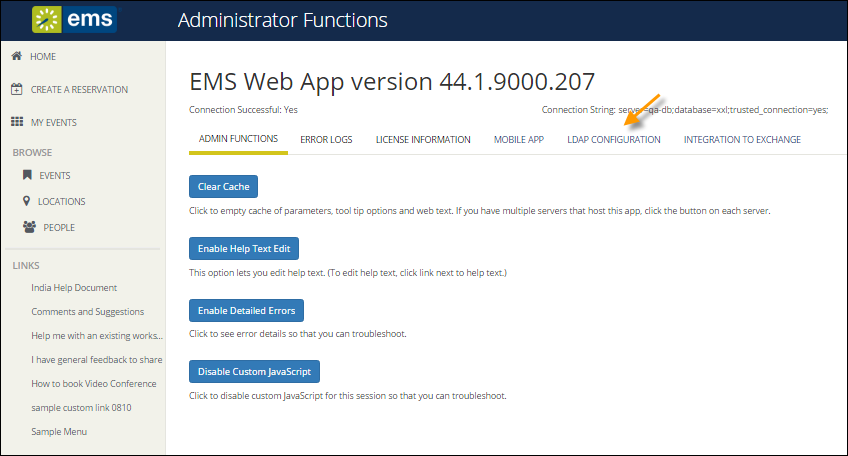
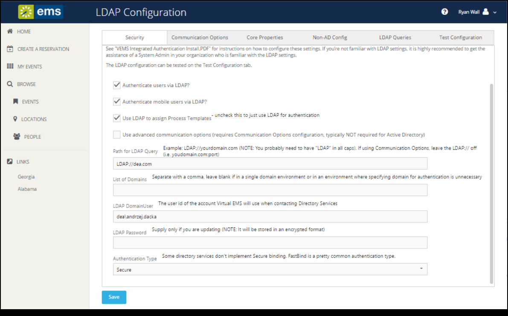
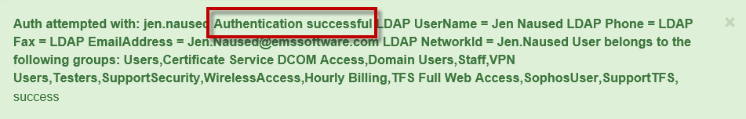

LDAP Authentication
Lightweight Directory Access Protocol (LDAP) is an application protocol for querying directory information. The LDAP Authentication method provides single-sign-on capability using your organization’s LDAP environment and can be used in both intranet and internet deployments of EMS Everyday applications such as EMS Web App and EMS Mobile App.
For example, when a user logs into EMS Web App or EMS Mobile App with their User ID and Password, their credentials are authenticated against LDAP and compared against corresponding user information recorded in the Network ID and/or External Reference fields of your EMS Everyday User records. If a match exists, the Everyday User will be logged in to the application, inheriting any Everyday User Process Template rights to which their LDAP Group has been assigned.
The EMS Web App LDAP-Process Template assignment process requires that your implementation of LDAP stores group information (e.g., staff, student, department, etc.) as a Directory Service object containing a property (i.e., member) that contains the users that belong to your various groups.
The Field Used to Authenticate Everyday User parameter (within System Administration > Settings > Parameters (Everyday User Applications tab) is used by the applications to determine which value should be used for authentication.
Follow the steps in this section to authenticate your users via LDAP. After successful connection to the platform API, the user will log in following the scenario below:
- The user will enter credentials on the Sign In screen and tap Sign In.
- will send credentials to the EMS Platform Services.
- EMS Platform Services will verify credentials against the configured LDAP provider.
- EMS Platform Services will respond to the .
- User will be taken to the Home screen.
If the credentials are missing when the user taps Sign In, an error message will display stating that fields are required. If the platform API is unable to verify the credentials, the mobile app will inform the user based on that response.
To use LDAP authentication, you will need to:
- Configure your LDAP Provider.
- Test your LDAP Configuration.
- Test your LDAP Authentication.
This topic covers the following topics related to LDAP configuration:
Configure Your LDAP Provider
- Navigate to Platform Services admin portal (e.g., https://Yourcompany.com/EmsPlatform/admin) and select Integrations from the sidebar.
- Select EMS Mobile and choose LDAP from everyday user authentication method dropdown.

- Navigate to the EMS Web App > Admin Functions page, listed under your name in the upper right corner of the application.

- Tap the LDAP Configuration tab and complete all required LDAP information, and then test your configuration.

Configure EMS Web App to Use LDAP Authentication
- Log into EMS Web App with a User that belongs to an Everyday User Security Template containing the Web Administrator role (controlled in the EMS Desktop Client under Configuration > Everyday User Applications > Everyday User Security Templates). See Also: Configuring Security Templates
- From the User Options, select Admin Functions.

- Click the LDAP Configuration tab.

- The LDAP Configuration window appears, presenting multiple tabs for various settings.

Configure EMS Web App Security
To configure EMS Web App security, complete the following from the Security tab:
- Select the Authenticate users via LDAP checkbox to enable LDAP authentication.
- If LDAP will be used to assign Everyday User Process Templates to your Web Users, select the Use LDAP to assign Process Templates checkbox.
- Use advanced communication options: Skip this step for Active Directory environments. Enabling this checkbox requires that you complete the settings on the Communication Options tab.
- In the Path for LDAP Query field, specify a valid LDAP path (example – LDAP://YourCompany.com)
- List of Domains: Skip this step if your organization uses a single domain. Otherwise, provide a comma separated list of your domains.
- In the LDAP Domain\User field, enter a Domain User account that has rights to query LDAP (example – YourDomain\User)
- In the Password field, enter a valid Password for the User Account entered in the previous step.
- Specify the appropriate LDAP Authentication Type for your environment.
The other tabs (Communication Options, Core Properties, Non-AD Config and LDAP Queries) should only be edited with assistance from our Support Department when special circumstances arise with unique configurations of LDAP.
Configure Communication Options
It is recommended that this tab only be edited with assistance from our Support Department when special circumstances arise with unique configurations of LDAP. If you’re not familiar with the LDAP settings, it is highly recommended to get the assistance of a System Admin in your organization who is familiar with the LDAP settings.
The Communication Options tab includes fields that define how to fetch a Group or a User when sending communications from the EMS Desktop Client. You can also set the SSL configurations, including the Security Certificate Path. Checking the Use SSL box will force communication to use SSL.
- Certificate Path: If there is a specific certification that you want to use to validate your authentication.
- Authentication Type: Type of authentication that your LDAP server will use during the binding process. Basic is the default because it is the most common.
- Search Root: The root is the level at which your search will begin.
- User Search Filter: Specifies the filter to use when performing the user search.
- Example: (&(objectClass=Person)(SAMAccountName={0})) or (&(objectClass=Person)(uid={0}))
- Group Search Filter: Specifies the filter to use when performing the group search.
- Example: (&(objectClass=Person)(objectClass=user))
- Protocol Version: Insert the current version number here. The default is 3, as the current version should be 3.
Core Properties
It is recommended that this tab only be edited with assistance from our Support Department when special circumstances arise with unique configurations of LDAP. If you’re not familiar with the LDAP settings, it is highly recommended to get the assistance of a System Admin in your organization who is familiar with the LDAP settings.
Indicate whether your LDAP implementation is Active Directory. These properties are set to the common defaults, but can be changed here if the LDAP properties differ from the defaults displayed.
- LDAP Name Property: The property for user name on the user record in LDAP that will be displayed. Displayname is the default, as it is the most common.
- LDAP Phone Property: The property for the phone number on the user record in LDAP that will be displayed. Telephonenumber is the default, as it is the most common.
- Domain to append to users: This field is unnecessary unless the domain of your user is different from the domain returned from the query.
- Field for LDAP Group Lookup: This identifies the EMS property that should be utilized when performing the search. For example, if you use LDAP solely to assign templates and you want the EMS Web App to look up group membership using a field other than the login name, then you must enter that field's name here.
Non-AD Configuration
It is recommended that this tab only be edited with assistance from our Support Department when special circumstances arise with unique configurations of LDAP. If you’re not familiar with the LDAP settings, it is highly recommended to get the assistance of a System Admin in your organization who is familiar with the LDAP settings.
If your LDAP implementation is not Active Directory, use these fields to redefine the LDAP property names used when searching directory information.
- LDAP Account/User ID Property: The property in your LDAP store that contains the user name.
- Example: If sameaccountname=xxxx, then enter sameaccountname
- Full LDAP User ID Format: Leave blank unless authentication requires a full path.
- Example: cn={0},ou=staff,o=yourdomain
- LDAP Group Category: The property in your LDAP store that contains the group category.
- Example: If filter should be objectClass=groupOfNames, then property should be groupOfNames
- LDAP Group Name: The property in your LDAP store that contains the group name.
- LDAP Group Member Name: The property in your LDAP store that contains the name of a single member in the group.
- Example: If member property is member=jdoe, then property should be member
- LDAP Group Member User Name Attribute: The property of the user record that corresponds to the group's member property to determine group membership.
LDAP Queries
It is recommended that this tab only be edited with assistance from our Support Department when special circumstances arise with unique configurations of LDAP. If you’re not familiar with the LDAP settings, it is highly recommended to get the assistance of a System Admin in your organization who is familiar with the LDAP settings.
These are LDAP query overrides to fetch Groups and Users from the domain. These settings rarely need to overridden, but can be used to customize queries.
- LDAP query for security groups: Query used to search for security groups in your LDAP store.
- LDAP query to find users: Query used to search for users in your LDAP store.
- LDAP query for find users with space: Query used to search for users that have spaces surrounding their user names in your LDAP store.
Save Your Configuration
- Click Save.
If you want Everyday Users to inherit Everyday User Process Templates based on the LDAP Group(s) with which they belong, see LDAP Groups Tab. Otherwise, you have completed the configuration process.
- Within EMS Desktop Client, go to the Everyday User Process Templates area (Configuration > Web > Everyday User Process Templates).
- Within an Everyday User Process Template, locate the LDAP Groups tab and select the appropriate LDAP Group(s) to map to that Everyday User Process Template.
- Click OK.
Test Your Configuration
- After completing configuration, navigate to the Test Configuration tab in the EMS Web App under LDAP Configuration.
- Enter your Network UserId Without Domain Name.
- Enter your Password.
- Click Test.
- If your configuration was successful, you will receive a message in a green box at the top that includes domain information and the words "Authentication successful" (please see example below).

- If the configuration was unsuccessful, you will receive a prompt stating that LDAP could not be accessed. Check your logs to determine the reason for the failure.
Configuring Authentication for the EMS Mobile App
- If your organization uses EMS Mobile App, click the Mobile App tab.
- Choose the LDAP option.
Test Your LDAP Configuration
Assuming you have installed the EMS Platform Services at https://Yourcompany.com/EmsPlatform, then you can test the configuration with a simple curl command:
curl -X GET -H 'x-ems-consumer: MobileApp' https://ems.yourcompany.com/endpoint/api/v1/health
You can also use the API's Swagger interface to accomplish this goal.
You should see a portion of the JSON response that looks like this (unrelated details omitted for brevity):
{
...
"additionalProperties": {
"authConfig": {
"activities":"ldap" // <-- these are the critical lines
"ui":"ldap"
}
}
}
Test Your LDAP Authentication
Assuming you have installed the EMS Platform Services API at https://ems.yourcompany.com/endpoint, you can test the authentication with a simple curl command:
curl -X POST -H 'x-ems-consumer: MobileApp' -H 'Content-Type: application/json' -d '{"username":"your_username", "password":"your_password"}' https://ems.yourcompany.com/endpoint...authentication
...where your_username and your_password are your credentials.
api/v1/authentication is the endpoint within the API where your request must be sent.